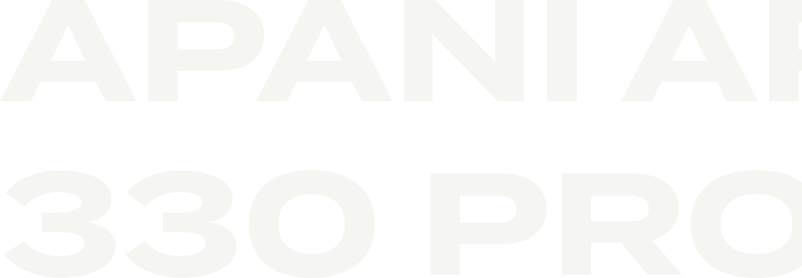
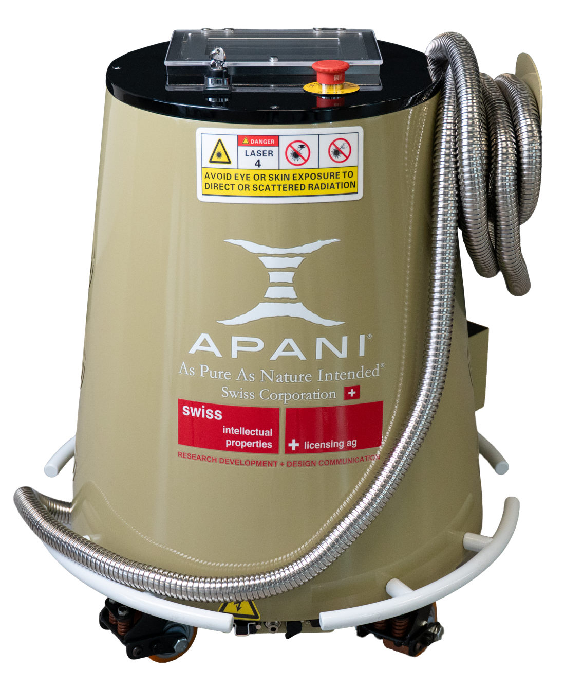
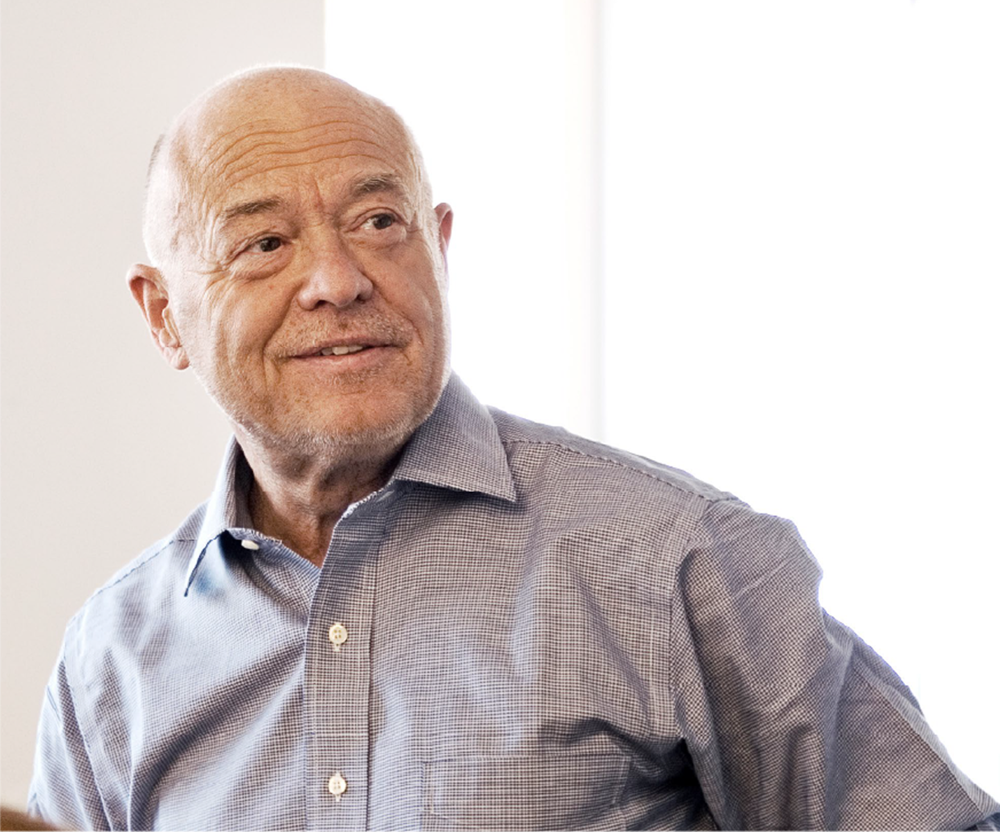

Professionelle Lasertechnologie aus der Schweiz
Reinigen. Entrosten. Entschichten. — Chemikalienfrei, umweltfreundlich, in 6 Monaten amortisiert.
Ein Laser. Unzählige Einsatzmöglichkeiten.
Entdecken Sie, wie APANI Laser traditionelle Reinigungsmethoden in jeder Branche revolutioniert.
Rostentfernung
Selbst hartnäckigsten Rost in Minuten statt Stunden entfernen, ohne das Grundmaterial zu beschädigen. Der APANI Laser arbeitet berührungslos und entfernt nur die Oxidschicht — das darunterliegende Metall bleibt vollständig intakt und ist sofort bereit für den nächsten Arbeitsschritt.
Ob Oldtimer-Restaurierung, Brückensanierung oder industrielle Instandhaltung — der Reinigungslaser ersetzt aufwändiges Sandstrahlen, gefährliche Säuren und zeitintensives Schleifen.
| Kriterium | Traditionell | APANI Laser |
|---|---|---|
| Zeitaufwand | 3–4 Stunden | 15–30 Minuten |
| Chemikalien | Erforderlich | Keine |
| Grundmaterial | Beschädigung möglich | Unversehrt |
| Abfall | Sondermüll | Kein Abfall |
| Nachbearbeitung | Häufig nötig | Nicht nötig |
Lackentfernung
Alte Lackschichten präzise entfernen — Schicht für Schicht oder alles auf einmal. Das Metall bleibt perfekt vorbereitet für neue Beschichtungen. Der Laser ermöglicht selektive Entlackung: Entfernen Sie gezielt einzelne Schichten, ohne die darunterliegenden zu beschädigen.
Ideal für die Automobilindustrie, Flugzeugwartung und überall dort, wo präzise Oberflächenvorbereitung gefragt ist.
| Kriterium | Traditionell | APANI Laser |
|---|---|---|
| Methode | Abbeizer / Schleifen | Laserpulse |
| Chemikalien | Aggressive Lösungsmittel | Keine |
| Präzision | Gering | Schicht für Schicht |
| Gesundheitsrisiko | Hoch (Dämpfe) | Minimal |
| Umweltbelastung | Sondermüll | Keine |
Graffiti-Entfernung
Farbe und Graffiti rückstandslos von Stein, Beton, Metall und Glas entfernen — ohne Chemie, ohne Hochdruck. Der Laser verdampft die Farbpigmente, ohne die darunterliegende Oberfläche zu beschädigen.
Besonders wertvoll für die Denkmalpflege, wo herkömmliche Methoden historische Bausubstanz angreifen können.
| Kriterium | Traditionell | APANI Laser |
|---|---|---|
| Methode | Hochdruck / Chemie | Laserpulse |
| Substanzerhaltung | Beschädigung möglich | Vollständig erhalten |
| Wasserbedarf | Hoch | Keiner |
| Denkmalpflege geeignet | Bedingt | Ideal |
Ölentfernung
Eingedrungenes Öl bis tief in die Poren verdampfen — für dauerhaft saubere und sichere Oberflächen. Der Laser erreicht Tiefenreinigung, die mit herkömmlichen Methoden unmöglich ist.
Besonders effektiv bei Werkstattböden, Maschinenteilen und überall dort, wo Öl in die Oberfläche eingedrungen ist.
| Kriterium | Traditionell | APANI Laser |
|---|---|---|
| Reinigungstiefe | Oberflächlich | Bis in die Poren |
| Dauerhaftigkeit | Temporär | Dauerhaft |
| Chemikalien | Entfetter nötig | Keine |
| Trocknungszeit | Stunden | Sofort trocken |
Schweissnaht-Reinigung
Anlauffarben entfernen und Schweissnähte in einem Bruchteil der Zeit reinigen — mit perfektem Ergebnis. Der Laser entfernt Oxidation und Verfärbungen ohne mechanische Einwirkung.
Ideal für Edelstahlverarbeitung, wo makellose Oberflächen unverzichtbar sind — in der Lebensmittelindustrie, Pharmaindustrie und im hochwertigen Metallbau.
| Kriterium | Traditionell | APANI Laser |
|---|---|---|
| Methode | Beizen / Schleifen | Laserpulse |
| Zeitaufwand | 30+ Minuten | 2–5 Minuten |
| Oberflächenqualität | Gut | Exzellent |
| Gesundheitsrisiko | Beizpasten (Flusssäure) | Keines |
Die richtige Lösung für jede Anforderung
Von der kompakten Reinigungslösung bis zum leistungsstarken 3-in-1 System — APANI bietet für jeden Einsatz das passende Gerät.

AP300
Laser-Reinigungssystem- 300W Pulslaserleistung
- 1064nm Wellenlänge, Klasse 4
- Reinigen, Entrosten, Entschichten
- 12 Reinigungsmodi
- Kompakt und mobil mit Rollen
- Intuitives 7-Zoll Touchscreen-UI
- Luftgekühlt, kein Wasseranschluss

AP500
Laser-Reinigungssystem- 500W Laserleistung
- 1064nm | 9 Reinigungsmodi
- Max. 30m/s Scangeschwindigkeit
- Leichtgewicht-Kopf unter 1.5kg
- Staubdichtes Design mit Luftvorhang
- 50 Prozessdatensätze, Dual-Touchscreen
- 10 Meter Kabellänge Standard

AP2000
3-in-1 Handheld-Lasersystem- 2000W Laserleistung
- Schweissen, Schneiden, Reinigen
- 1064nm, QBH Faseranschluss
- Schweisskopf nur 1000g, 47mm breit
- Kontaktlicht-Sicherheit (5-stufig)
- Drahtlose Steuerung in Echtzeit
- Schutzgase: N2, Ar, He, Druckluft
Warum APANI Laser?
Schnelle Amortisation
Nur 6 Monate bis zur vollständigen Amortisation. Sie sparen durch wegfallende Chemikalien und reduzierte Arbeitszeit.
100% Umweltfreundlich
Keine Chemikalien, kein Wasser — nur Laser. Erfüllen Sie alle Umweltauflagen ohne Aufwand.
Extrem Schnell
40'000 Laserimpulse pro Sekunde mit Scangeschwindigkeiten bis 40'000 mm/s.
Schonende Technik
Zerstörungsfreie Reinigung — entfernt nur was weg soll. Grundmaterial bleibt unversehrt.
Schweizer Qualität
Patentierte Technologie von Prof. Dr. Bodo Lambertz. Funktioniert von -30°C bis +70°C, bis 5000m Höhe.
Einfache Bedienung
Intuitive Fernsteuerung am Laserkopf mit Abstandsmessung. Auch ungelernte Mitarbeiter bedienen es nach kurzer Einweisung.
Innovation trifft Verantwortung
Die Marke APANI verkörpert wegweisende Innovation. Unter der Führung von Prof. Dr. Bodo Lambertz vereint APANI bahnbrechende Technologie mit ökologischer Verantwortung.
Prof. Dr. Bodo Lambertz — der Erfinder des APANI Systems — ist der 7. Mensch der Geschichte, der den prestigeträchtigen Lifetime Achievement Award erhalten hat.
"As Pure As Nature Intended"

Massgeschneidert für Ihre Branche
Carrosserien
Rost, Lackschichten, Unterbodenschutz in Minuten entfernen. Perfekt für Oldtimer-Restaurierung und Unfallreparaturen.
Metallbau & Sanitär
Schweissnähte reinigen, Walzhaut entfernen, Oberflächen vorbereiten. 80% Zeitersparnis gegenüber herkömmlichen Methoden.
Denkmalpflege
Schonende Reinigung historischer Bausubstanz. Berührungslos, originalsubstanzerhaltend — ohne jegliches Risiko für wertvolle Oberflächen.
Baugewerbe & Fassadentechnik
Alte Beschichtungen, Kleber, Verschmutzungen von Beton, Stein und Metall entfernen — ohne die Oberfläche zu beschädigen.
Schiffbau & Marine
Rost und Antifouling entfernen ohne Sandstrahlen. Keine Wasserkontamination — ideal für umweltsensible Bereiche.
Luft- und Raumfahrt
Hochpräzise Oberflächenbehandlung für sicherheitskritische Komponenten — dort, wo keinerlei Kompromisse möglich sind.